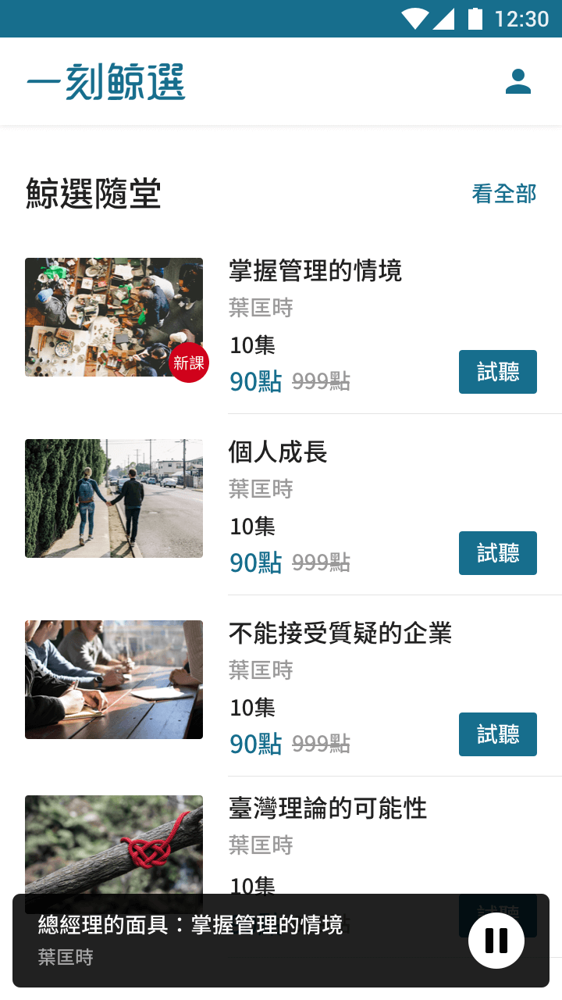

一刻鯨選
聯合報系Roll
UI Design/Wireframing/Web Front End/Branding
Tools
Sketch/Illustrator/Zeplin/Invision/Sublime
Product Concept
現代人希望在工作上有好的表現，更希望取得生活的平衡。知識太浩瀚，所不懂或沒接觸的事物很多，想學習知識，確面臨到時間不夠用的難題。為了讓現代人善用科技，並能夠與時俱進，推出知識音頻的服務。希望利用零碎不占用完整工作或休閒的時間充電。
-
 -

-

-

Collection Icons
Branding
品牌命名由來
抹香鯨、聽
品牌核心理念（目的）
提供想學習知識的人一個平台
產品特色＆服務特色
專業、有內涵與質量、有條理、深入淺出、簡單明瞭、親合力、樂於分享、有幽默感、懂的生活、有內涵、成熟不浮誇、了解人心、上進
軟中帶硬的內容（文藝、史學、哲學風格）
識別Logo
產品以抹香鯨與聽的元素來設計形象Logo，希望傳達與讓人感受到，內容是深入淺出、簡單明瞭、有親合力但又不失專業與內涵質量。

行銷素材
產品行銷立牌、模擬使用情境繪製
Web Site

Thoughts & Learnings
從這個專案中，學習到很多不同的合作方法。經過競品研究、市場觀察到內部討論，到產品推出初期進行量化與質化的使用者調查調查，我們找到產品與競爭對手之間的差異，了解自己能為用戶帶來什麼樣的好處，提供不同的群不同的策略，並找出問題並提出改善建議。
除了使用者的觀點，在了解商業模式的背後，要怎麼站在營運者的觀點設計，要如何吸引更多人使用並且留住他們？買得更多而且如何在最後一步觸法使用者進行購買動作？
期待未來，除了提供使用者在體驗上能有更良好的經驗，也期待產品能持續成長，達到多贏的成果。